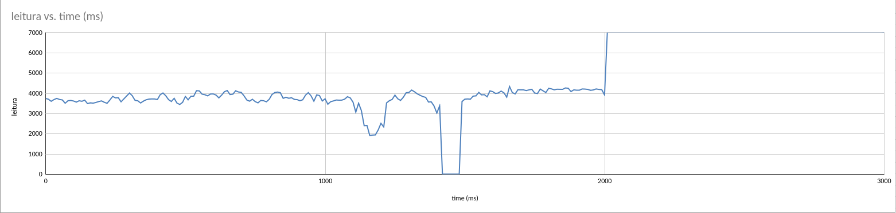
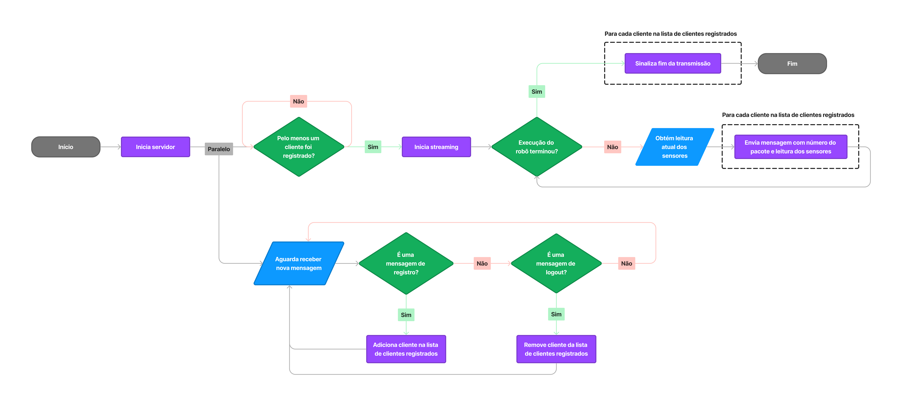
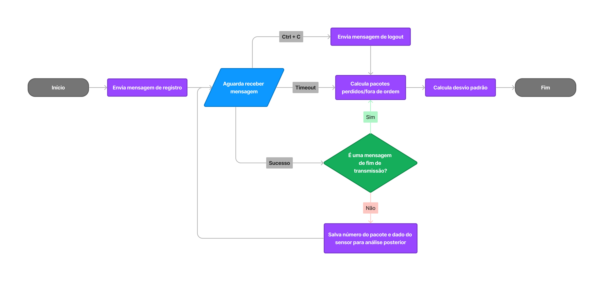

Relatório do Trabalho Prático de Redes de Computadores II - 2023/2
Artur Temporal Coelho e Vinícius Maurício Ribeiro
Universidade Federal do Paraná
Bacharelado em Ciência da Computação
O servidor deve ser capaz de atender múltiplos clientes simultaneamente.
Deve ser possível configurar via linha de comando o intervalo de tempo
em que cada mensagem do stream é transmitida.
O número de campos é no mínimo 2, pois obrigatoriamente cada pacote
informa sua ordem no stream, começando por 1.
Ao encerrar o cliente ele deve produzir estatísticas sobre o uso do UDP:
quantos pacotes foram perdidos e quantos chegaram fora de ordem.
O cliente deve implementar uma operação sobre os dados recebidos.
Exemplo: calcular a média dos valores recebidos.
Devem ser apresentados logs para múltiplas execuções.
Pelo menos uma das execuções deve ter obrigatoriamente 3 clientes
recebendo o stream.
Relatório de como foi feito o trabalho e quais foram os resultados
obtidos em uma página HTML
Na entrega:
Link da página web.
Acrescente a todo programa a terminação ".txt" para ser possível
visualizar o código fonte no navegador.
Logs de execução dos processos cliente/servidores, que demonstrem a
execução correta destes processos.
Escopo
O trabalho simula o stream de dados de um robô seguidor de linha. À medida
que o robô percorre a linha, o servidor - executando no robô -
disponibiliza os dados dos sensores na rede. Os clientes consomem esses
dados em tempo real.
Como os autores deste trabalho são integrantes da Equipe de Robótica
Yapira da UFPR, os dados obtidos são
valores reais de um robô seguidor de linha.
O robô utilizado possui uma matriz com 8 sensores de reflitância,
posicionados lado a lado. Cada dado enviado pelo robô representa a posição
da linha em relação aos sensores, que varia de 0 a 7000:
0 indica que a linha está diretamente abaixo do sensor 0 (mais à
esquerda);
1000 indica que a linha está diretamente abaixo do sensor 1 (ao lado do
sensor 0);
2000 indica que a linha está diretamente abaixo do sensor 2;
...
7000 indica que a linha está diretamente abaixo do sensor 7 (mais à
direita).
Um valor de 3500, por exemplo, indica que a linha está entre os sensores 3
e 4.

Imagem 1.0: Gráfico dos dados coletados
O gráfico acima representa a execução do seguidor de linha durante um
período de 3 segundos. Em um caso ideal, o gráfico deveria ser apenas uma
linha reta com valor de 3500, indicando que o robô permaneceu sempre no
centro da linha.
Os dados coletados são utilizados para análise de performance do seguidor
de linha. Uma das métricas empregadas para essa análise é o desvio padrão,
que quantifica a variação dos dados em relação à média. Quanto maior o
valor do desvio padrão, maior a instabilidade e imprevisibilidade no
comportamento do robô. Essa foi a operação escolhida para os clientes
implementarem sobre os dados recebidos.
Implementação
Para melhor visualização dos fluxogramas, recomenda-se abrir a imagem em
uma nova aba.

Imagem 2.0: Fluxograma de funcionamento do servidor

Imagem 2.1: Fluxograma de funcionamento do cliente
Mensagens do Servidor
O servidor pode enviar as seguintes mensagens, codificadas como string:
fim de transmissão ("end"): envia para todos os clientes registrados,
assim que a stream termina;
mensagem de dados ("[numero do pacote] [dado]"): mensagem com a leitura
dos sensores e a ordem do pacote. É enviada para todos os clientes
registrados;
O servidor pode receber as seguintes mensagens, codificadas como string:
registro ("register"): adiciona o endereço e porta do cliente na lista
de clientes registrados.
logout ("quit"): remove o endereço e porta do cliente na lista de
clientes registrados.
Observações Importantes do Servidor
Para que o seguidor comece o stream dos dados, deve haver pelo menos um
cliente registrado.
Se algum cliente fizer o logout (ou parar de receber os dados) e
posteriormente fizer o registro, os dados emitidos enquanto o cliente
estava ausente não serão retransmitidos.
Se qualquer cliente se conectar após o início do stream, inevitavelmente
já terá perdido pacotes, uma vez que o sistema e de tempo real.
Após o início do streaming, mesmo se todos os clientes fizerem logout, o
streaming continuará normalmente até o final da execução do robô.
A leitura dos sensores de linha é simulada através da iteração dos
dados coletados
O cliente pode enviar as seguintes mensagens, codificadas como string:
registro ("register"): obrigatório envio para começar a receber os
dados;
logout ("quit"): quando o cliente desejar encerrar a conexão.
O cliente pode receber as seguintes mensagens, codificadas como string:
mensagem de dados ("[numero do pacote] [dado]"): mensagem com a leitura
dos sensores e a ordem do pacote. Enviada durante o streaming.
fim de transmissão ("end"): sinaliza fim do streaming de dados.
Observações Importantes do Cliente
A única forma do cliente encerrar a conexão com o envio do logout é se o
usuário interromper o programa (Ctrl+c).
O cliente não recebe mensagem do servidor caso o registro não tiver sido
realizado. Nesse caso, o socket do cliente dará timeout, e as
estatísticas geradas serão sobre 0 (zero) pacotes.
O timeout do socket do cleinte é de 5 segundos. Caso a mensagem de fim
de transmissão não tiver sido recebida, o timeout garante que o cliente
não fique preso esperando os dados ad infinitum.
Foram realizados 4 testes no total, para demonstrar as capacidades do
serviço de streaming.
Todos os testes foram replicados duas vezes, com resultados similares
porém com leves variações: uma vez na versão simplificada, e uma vez com
todos os pacotes enviados e recebidos sendo marcados no log.
Os logs são por parte do servidor, e dos clientes em conjunto (neste caso,
estão no mesmo local e podem escrever no mesmo arquivo).
Em todas as transmissões os dados foram enviados tanto total como
parcialmente.
Teste 1
A transmissão 'normal', com o servidor iniciando, e o cliente recebendo
todos os pacotes, em ordem, e sem perda devido a interrupções forçadas.
A transmissão inicia com o Cliente 1, e logo em seguida, o Cliente 2
começa a escutar a transmissão, perdendo alguns pacotes que já haviam sido
enviados.
O Cliente 1 faz a conexão inicial e começa a receber os dados, porém é
interrompido no meio da transmissão, logo em sequência o Cliente 2 inicia
a recepção dos dados.